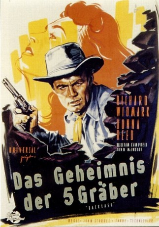
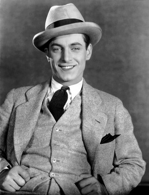

#2666 Das Geheimnis der 5 Gräber
Alternativ: Backlash
 
 IMDB-Wertung: 6.6 / 10
IMDB-Wertung: 6.6 / 10  Metascore: 0
Metascore: 0 
Jim Slater's father (whom he never knew) died in the Apache ambush at Gila Valley, and Jim is searching for the one survivor, who supposedly went for help but disappeared with a lot of gold. In the process, he gets several people gunning for him, and he keeps meeting liberated woman Karyl Orton, who may be on a similar mission. Renewed Apache hostilities and an impending range war provide complications.
Jahr: 1956
Dauer: 84 Minuten
FSK: 16
Land: USA Studio: Universal PicturesTonspuren: DD2.0 - ,
Untertitel:
Auflösung: 1080p (1920x960) Größe: 5314 MB
Genre: Western, Liebe, Mystery
Regisseur: John Sturges
Drehbuch: Frank Gruber, Borden Chase
Soundtrack: Herman Stein
Darsteller:
 Richard Widmark als Jim Slater
Richard Widmark als Jim Slater Donna Reed als Karyl Orton
Donna Reed als Karyl Orton- William Campbell als Johnny Cool
 John McIntire als Jim Bonniwell
John McIntire als Jim Bonniwell Barton MacLane als Sgt. George Lake
Barton MacLane als Sgt. George Lake Harry Morgan als Tony Welker
Harry Morgan als Tony Welker Robert J. Wilke als Jeff Welker
Robert J. Wilke als Jeff Welker Jack Lambert als Mike Benton
Jack Lambert als Mike Benton Roy Roberts als Maj. Carson
Roy Roberts als Maj. Carson Edward Platt als Sheriff J.C. Marson
Edward Platt als Sheriff J.C. Marson- Phil Chambers als Deputy Sheriff Dobbs
- Frank Chase als Cassidy, Shotgun Rider
 I. Stanford Jolley als Pot Luck , uncredited
I. Stanford Jolley als Pot Luck , uncredited Norman Leavitt als Hotel Clerk , uncredited
Norman Leavitt als Hotel Clerk , uncredited Glenn Strange als Milliken, Stage Driver , uncredited
Glenn Strange als Milliken, Stage Driver , uncredited Robert Foulk als Sheriff John F. Olson
Robert Foulk als Sheriff John F. Olson Gregg Barton als Sleepy
Gregg Barton als Sleepy Fred Graham als Ned McCloud
Fred Graham als Ned McCloud- Walter Beaver als Little Willie , uncredited
- Wayne Burson als Soldier , uncredited
- Johnny Carpenter als Rider , uncredited
-  Rex Lease als Sgt. Blane , uncredited
- John Maxwell als Col. Welnick , uncredited
- John McKee als Harry, Deputy , uncredited
 Regis Parton als Tom Welker , uncredited
Regis Parton als Tom Welker , uncredited- George Patterson als Townsman , uncredited
 William 'Bill' Phillips als Rebel, the Bartender , uncredited
William 'Bill' Phillips als Rebel, the Bartender , uncredited- Lee Roberts als Fresno, Bonniwell Henchman , uncredited
- Jack Williams als Castro , uncredited
Datei: X:\HD-Western-1900-1959\Geheimnis der 5 Gräber, Das (1956, FSK16, 1920x960).mkv seit 30.11.2015
Festplatte: HD Eastern+Western
 Es gibt insgesamt 98 Filme in der Gruppe 'HD-Western-1900-1959'
Es gibt insgesamt 98 Filme in der Gruppe 'HD-Western-1900-1959'